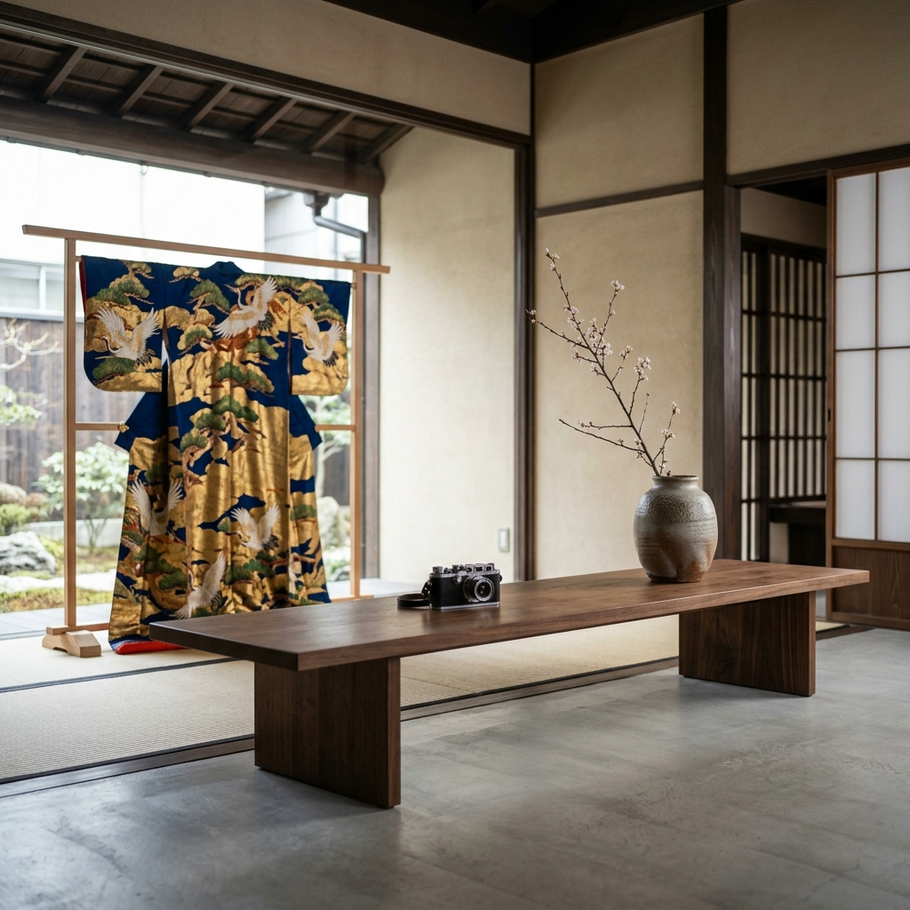

生前整理・遺品整理・蔵の整理。
「ただの古い物」に見える品々には、グローバルな美術市場で高く評価される価値が眠っています。
確かな目利きによるプレミアムな出張買取り。
▼ 無料鑑定のご依頼はこちら ▼
通話無料 (9:00-20:00) 0120-000-000国内の相場だけでなく、欧米やアジアの美術品オークションの最新データ（落札履歴）とリアルタイムで連携。一部の国内業者だけが知る閉鎖的な相場ではなく、最も高く売れる「グローバルな適正価格」でお買取りいたします。
茶器の箱がない、シミがある掛け軸、動かないアンティーク時計。一般的には「処分費用がかかる」と言われるものでも、作家の文脈や素材の希少性を読み解き、数十万円の価値を付与してきた実績が多数ございます。ご自身でゴミ袋に入れる前に、我々にお見せください。
鑑定士は全員スーツ着用で、真新しい白手袋を使用します。ホコリや汚れのある蔵の整理であっても、お客様の私有財産への最大限の敬意を払い、決して空間を乱すことなく、迅速かつ静かに査定・搬出を行います。
他社で「価値ゼロ」と言われた品が、高額で取引された事例です。
共箱（木の箱）なし。蔵の隅でホコリを被っていたもの。時代考証により李朝の作と判明。
祖父の遺品。針は動かずサビも浮いていたが、内部のムーブメントの希少性が極めて高く評価。
タンスに眠っていた大量の着物。一部シミありだったが、重要無形文化財保持者の作品を発見。
22ジャンル（骨董、時計、カメラ、切手、貴金属など）何でもお見せください。
出張費用・鑑定に関する費用はいかなる場合も頂戴いたしません。
「売るかどうかは金額を聞いてから決めたい」というご要望に、誠心誠意お応えします。